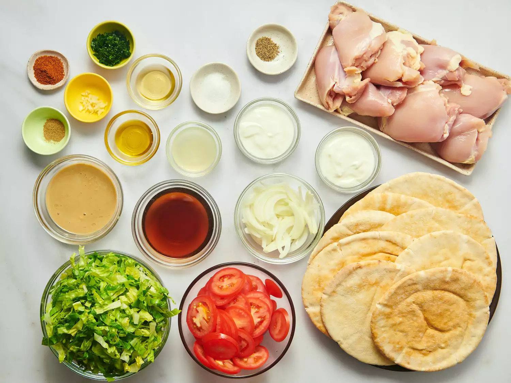
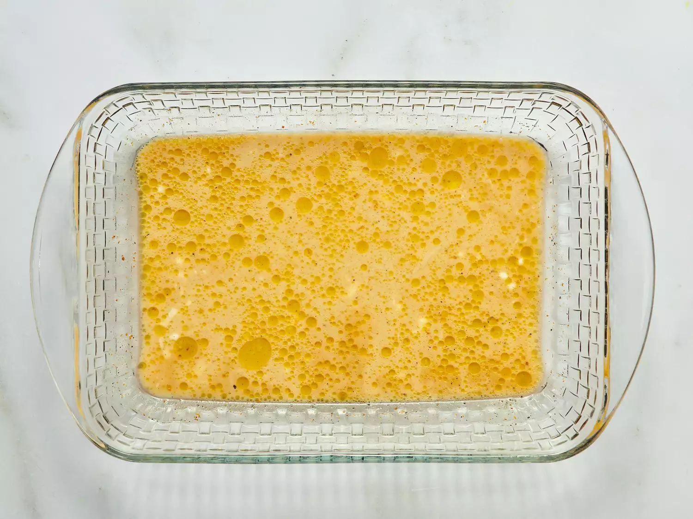
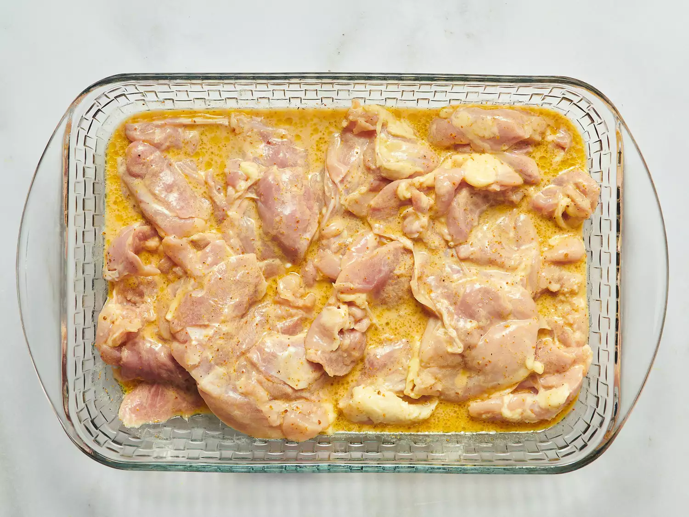
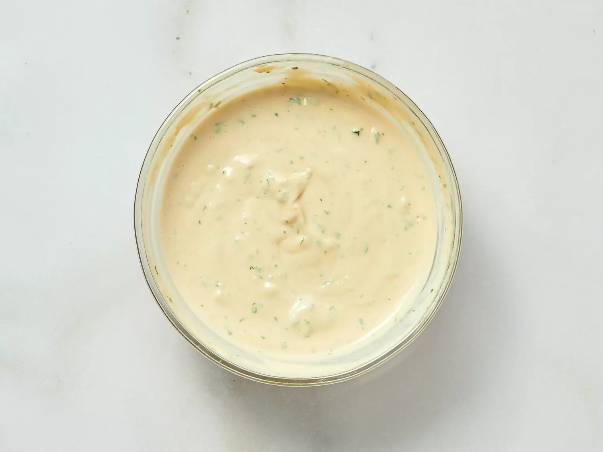
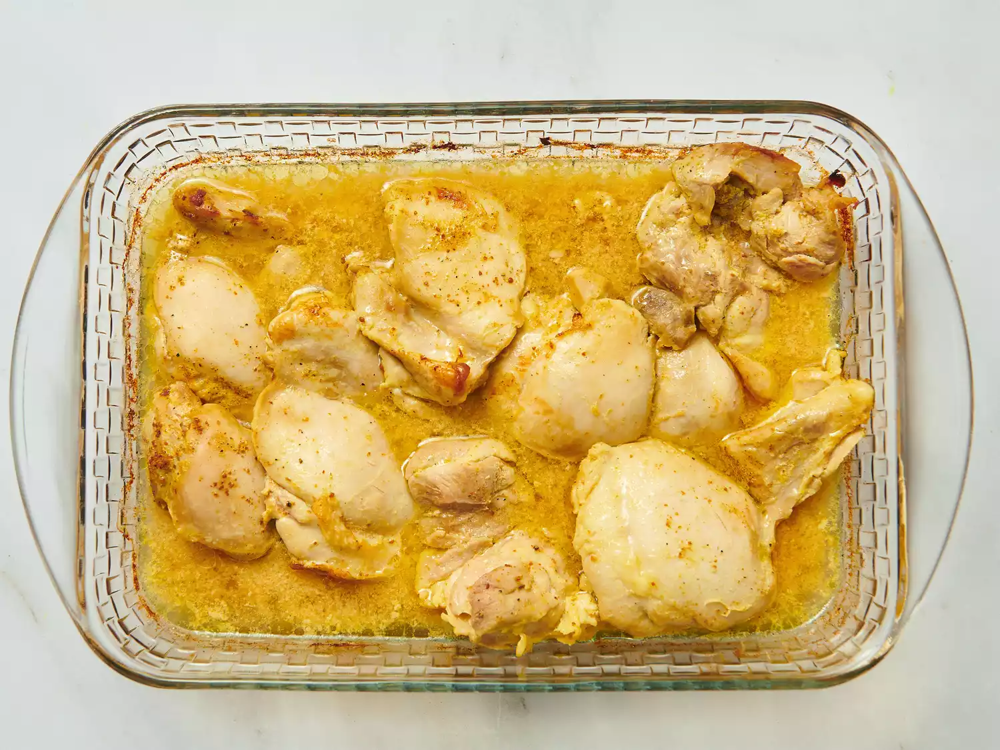
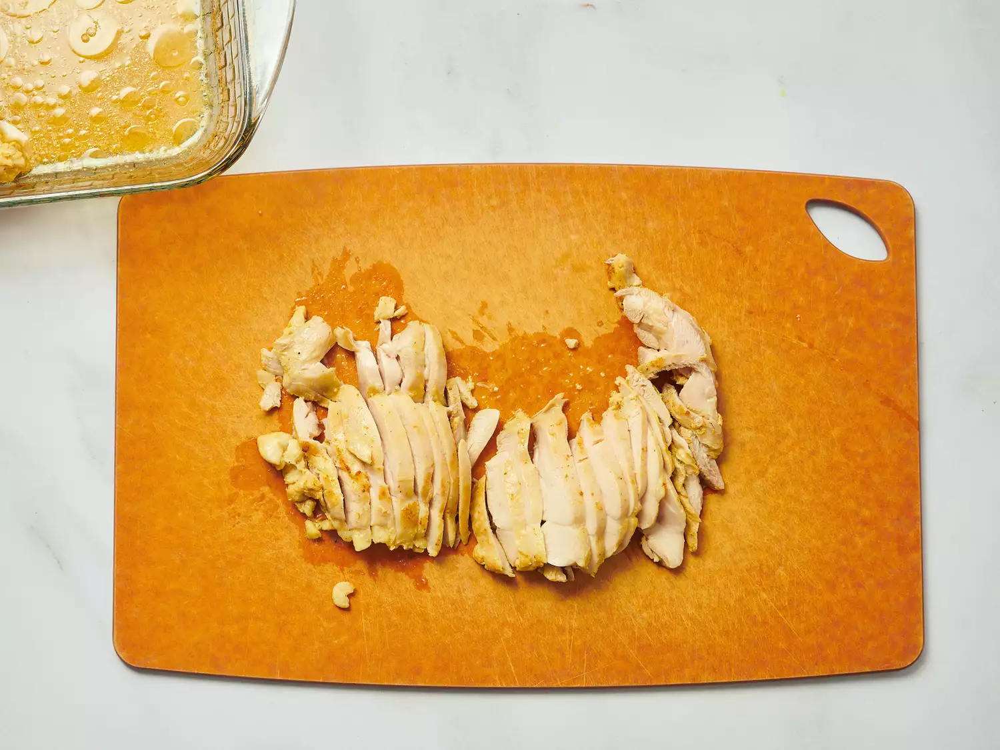

Gather all the Ingredients.

To make the marinade: Combine malt vinegar, 1/4 cup yogurt, vegetable oil, mixed spice, cardamom, salt, and pepper together in a glass baking dish.

Add chicken thighs to the mixture and turn to coat. Cover and marinate in the refrigerator for at least 4 hours or overnight.

Preheat the oven to 350 degrees F (175 degrees C). To make the tahini sauce: Combine tahini, 1/4 cup yogurt, garlic, lemon juice, olive oil, and parsley together in a small bowl. Season with salt and pepper, taste, and adjust flavors if desired. Cover and refrigerate.

Cover the chicken and bake in the marinade for 30 minutes, turning once. Uncover, and cook for an additional 5 to 10 minutes, or until chicken is browned and cooked through.

Remove chicken from the dish, and cut into slices.

Place sliced chicken, tomato, onion, and lettuce onto pita breads. Roll up, and top with tahini sauce.